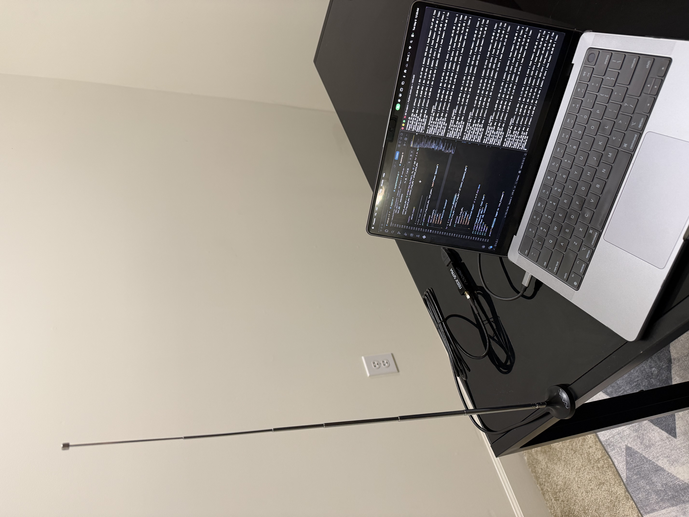
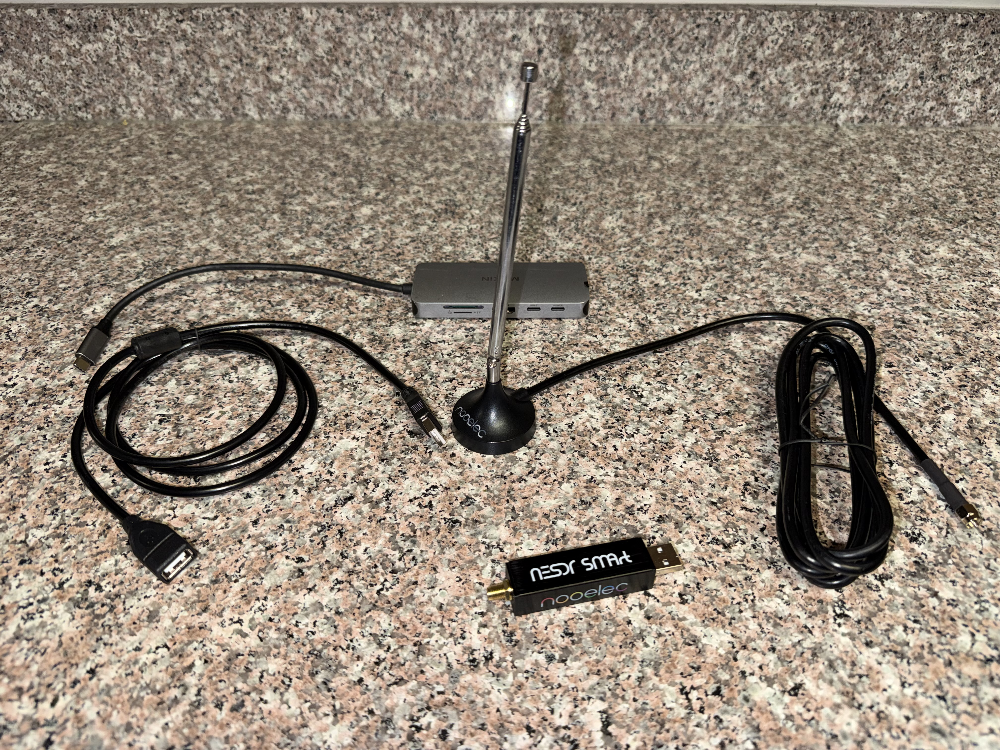
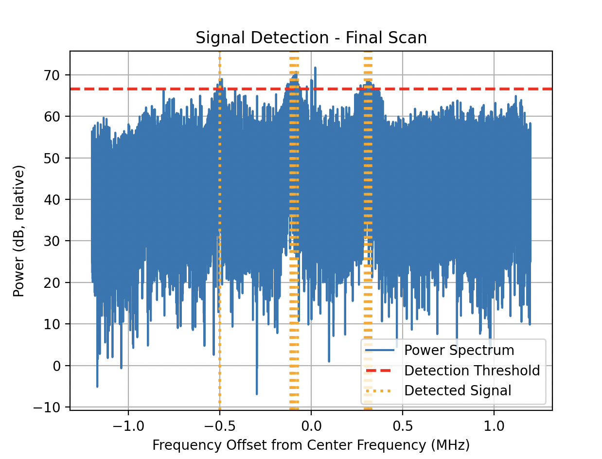
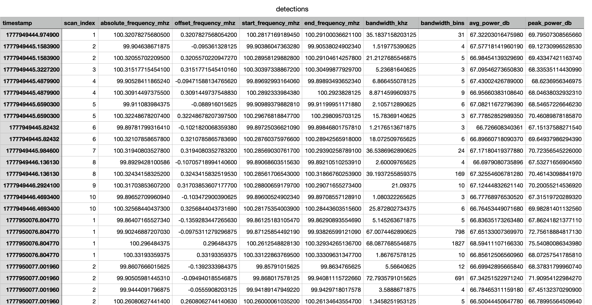
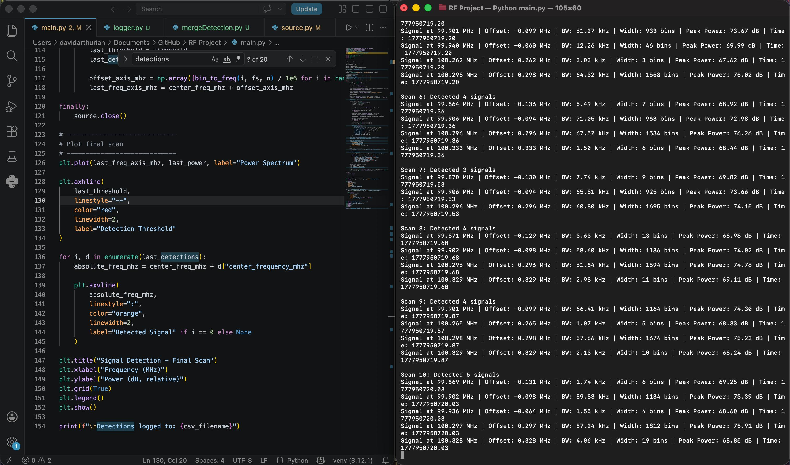

A real-time RF signal detection project using an RTL-SDR, Python, FFT-based spectrum analysis, threshold detection, clustering, CSV logging, and persistent signal analysis. This project serves as the software reference model for a future FPGA-accelerated signal processing engine.
This project is a real-time RF sensing pipeline built around a Nooelec NESDR SMArt v5 software-defined radio. The system captures live IQ samples from the SDR, computes a frequency-domain power spectrum using the FFT, detects signal candidates above a dynamic noise threshold, clusters nearby FFT bins into signal regions, merges duplicate detections, and logs RF activity to a CSV file for persistence analysis.
I first validated the DSP pipeline using simulated IQ signals, then swapped the input source to live SDR hardware without rewriting the processing chain. This gave the project a clean modular structure and made the hardware integration straightforward.

The system is structured as a modular DSP pipeline. The antenna receives RF energy from nearby transmitters, the RTL-SDR downconverts and digitizes the signal, and the Python pipeline analyzes the resulting IQ samples.
source.py provides either simulated test signals or live SDR data without changing the rest of the pipeline.
dsp.py converts time-domain IQ samples into a frequency-domain power spectrum and maps FFT bins to frequency offsets.
detection.py estimates the noise floor and flags FFT bins whose power exceeds a dynamic threshold.
clustering.py groups adjacent high-power FFT bins into rough signal regions.
mergeDetection.py merges nearby detections into cleaner signal objects with center frequency, bandwidth, and power metrics.
main.py prints detected signals and visualizes the live RF spectrum, threshold, and detected signal centers.
logger.py stores detections to CSV and analyzeDetections.py identifies persistent RF activity over time.
The hardware setup uses a Nooelec NESDR SMArt v5 RTL-SDR dongle, a USB extension cable, an SMA antenna base, and interchangeable antennas. The SDR is connected to a MacBook and controlled through Python and RTL-SDR command-line tools.

The project is split into multiple Python modules so each part of the system has a specific responsibility.
The SDR was tuned around the FM broadcast band. With a center frequency of 100 MHz and a 2.4 MS/s sample rate, the system analyzed roughly a 2.4 MHz slice of spectrum from about 98.8 MHz to 101.2 MHz.
The plot below shows the power spectrum from a live SDR capture. The blue trace is relative RF power, the red dashed line is the detection threshold, and the orange vertical lines mark detected signal centers.

After tuning the SDR and running the detection pipeline, the system produced live detections showing absolute frequency, offset from the SDR center frequency, estimated bandwidth, FFT bin width, relative peak power, and timestamp.
Scan 1: Detected 2 signals
Signal at 99.920 MHz | Offset: -0.080 MHz | BW: 25.38 kHz | Width: 5 bins | Peak Power: 70.00 dB
Signal at 100.290 MHz | Offset: 0.290 MHz | BW: 1.21 kHz | Width: 3 bins | Peak Power: 66.95 dB
Scan 2: Detected 3 signals
Signal at 99.904 MHz | Offset: -0.096 MHz | BW: 28.73 kHz | Width: 12 bins | Peak Power: 71.37 dB
Signal at 99.926 MHz | Offset: -0.074 MHz | BW: 3.52 kHz | Width: 6 bins | Peak Power: 67.51 dB
Signal at 100.314 MHz | Offset: 0.314 MHz | BW: 18.08 kHz | Width: 4 bins | Peak Power: 71.86 dBAfter logging detections to CSV, I wrote an analysis script to group repeated detections over time. The system identified two persistent RF regions near 99.9 MHz and 100.3 MHz. These are likely FM broadcast signals within the local RF environment.
Persistent Signal Summary
center_frequency_mhz detections unique_scans avg_bandwidth_khz avg_peak_power_db max_peak_power_db
100.303612 49 10 31.542159 71.720043 79.204590
99.899290 54 10 27.125888 70.277979 74.629333
After detecting persistent FM-band signals, I added an experimental FM receiver mode. This allowed the SDR to tune to public FM broadcast stations and demodulate audio. I tested this on stations such as WAMU 88.5 FM and confirmed that the system could receive intelligible speech, although audio quality depended heavily on antenna placement, gain, and signal strength.
This feature helped connect the spectrum detection output to real-world RF signals. The same antenna and SDR used for detection were also able to receive broadcast audio.

This project serves as the software baseline for a future FPGA-accelerated signal processing engine. The most computationally important portion of the current pipeline is the DSP stage: converting IQ samples into a power spectrum, detecting threshold crossings, and identifying frequency regions of interest.
For the next phase, I plan to move parts of the FFT, power calculation, and threshold detection chain onto an FPGA. The Python implementation from this project provides a reference model for validating the FPGA output and comparing performance.
Project 1 Software Reference:
IQ Samples → FFT → Power Spectrum → Threshold Detection → Signal Candidates
Project 2 FPGA Target:
IQ Samples → FPGA FFT/Power/Detection Engine → Host-side Logging + VisualizationThis project taught me how to connect RF hardware, digital signal processing, and software architecture into one working system. I learned how SDRs represent RF signals as IQ samples, how FFTs reveal frequency-domain activity, how to design a threshold-based detector, and how to turn noisy raw detections into cleaner signal objects through clustering and merging.
Most importantly, I built a foundation for hardware acceleration by first creating a working software reference pipeline. That gives me a clear path to compare CPU-based DSP against FPGA-accelerated DSP in the next project.